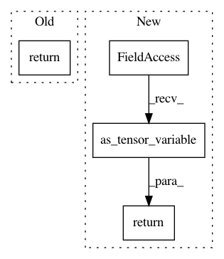

c0773b7719ceb7a6556cc92293325ed78aaa6a4f,pymc3/distributions/transforms.py,Circular,forward,#Circular#Any#,262
Before Change
return tt.arctan2(tt.sin(y), tt.cos(y))
def forward(self, x):
return x
def jacobian_det(self, x):
return 0
After Change
return tt.arctan2(tt.sin(y), tt.cos(y))
def forward(self, x):
return tt.as_tensor_variable(x)
def jacobian_det(self, x):
return 0
In pattern: SUPERPATTERN
Frequency: 3
Non-data size: 4
Instances
Project Name: pymc-devs/pymc3
Commit Name: c0773b7719ceb7a6556cc92293325ed78aaa6a4f
Time: 2017-04-22
Author: aloctavodia@gmail.com
File Name: pymc3/distributions/transforms.py
Class Name: Circular
Method Name: forward
Project Name: keras-team/keras
Commit Name: a6c9227372c607fc356b14e17c230cb9c1d5f589
Time: 2017-01-05
Author: gvtulder@users.noreply.github.com
File Name: keras/backend/theano_backend.py
Class Name:
Method Name: _old_batch_normalization
Project Name: rodluger/starry
Commit Name: 4e5c97a84c22b6beb953e34a0f18147f7e668f88
Time: 2019-09-05
Author: rodluger@gmail.com
File Name: starry/ops/ops.py
Class Name: Ops
Method Name: align